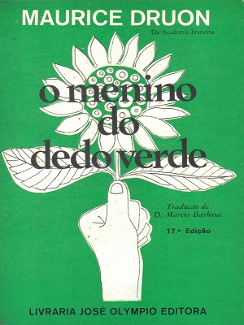
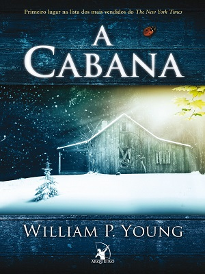

O Cortiço
Uma das mais importantes obras do Naturalismo no Brasil, este romance de Aluísio Azevedo trata do cotidiano de uma moradia popular no Rio de Janeiro em finais do século 19, período efervescente da formação urbana na então capital do Brasil. Como prefácio, está o já consagrado ensaio do Professor Antonio Candido “De cortiço a cortiço”.gentilmente cedido para esta edição.

Os Mortos Permanecem Jovens
Os mortos permanecem jovens, escrito em 1949, é um dos grandes romances do século 20. Em suas páginas não acompanhamos um herói, mas a impossibilidade e, ao mesmo tempo, a triste necessidade do heroísmo de seguir vivendo. O livro parece até mesmo escrito em nome da tristeza do isolamento imposto a tantos que lutaram para evitar o pior.

Semente de Letra
‘O feijão nasce da terra. O arroz também. As frutas mais gostosas dão nos pés que a gente planta… ‘ Nisto pensava Vitória, quando entramos em seu mundo. Após um simples acidente acontece algo que a leva a mergulhar fundo, arrebatando consigo seus companheiros ‘sem-terrinha’, e a nós também, para um universo inusitado e novo – o mundo das letras…até chegar no mistério das suas sementes e plantá-las!

O Universo Numa Casca de Noz
Conta a história de astronautas engolidos por buracos negros, viajantes do tempo, debates sobre a origem do universo (e de todos nós), seu possível fim e a existência de vida em outras galáxias, além de apresentar questionamentos sobre o futuro biológico e tecnológico da humanidade em si.
Percy Jackson e o Mar de Monstros
O Mar de Monstros é o segundo volume da série Percy Jackson e os olimpianos, best-seller do The New York Times. Nessa nova aventura, Percy e seus amigos estão em busca do Velocino de Ouro, único artefato mágico capaz de proteger da destruição seu lugar predileto e, até então, o mais seguro do mundo: o Acampamento Meio-Sangue.

Harry Potter e a Criança Amaldiçoada
Sempre foi difícil ser Harry Potter e não é mais fácil agora que ele é um sobrecarregado funcionário do Ministério da Magia, marido e pai de três crianças em idade escolar.